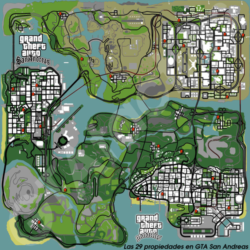
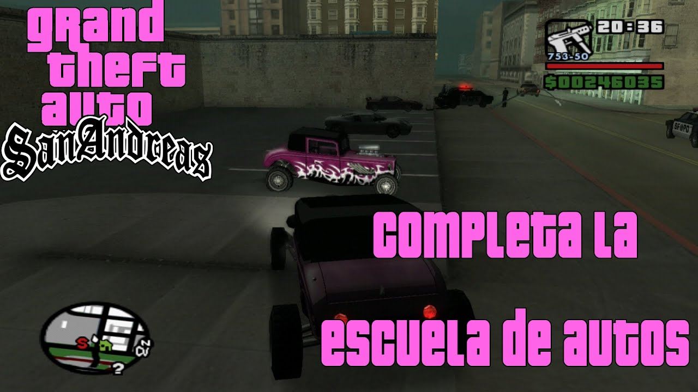
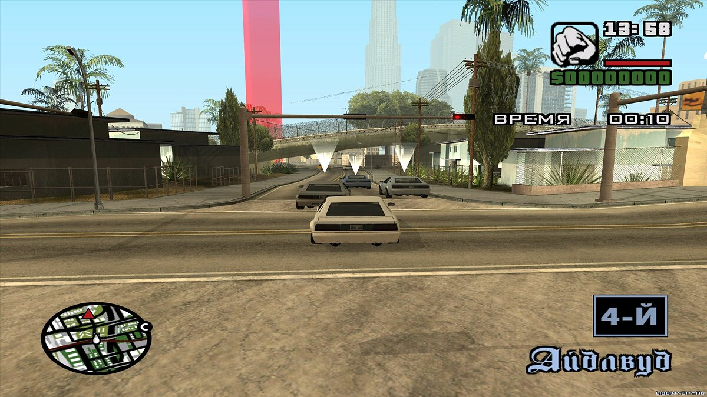
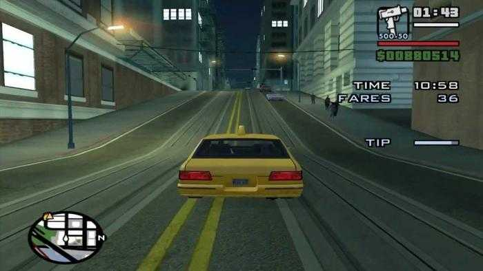
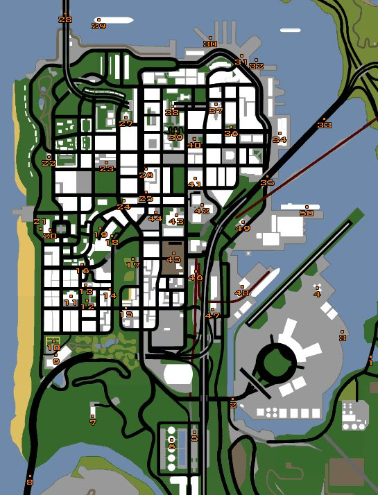
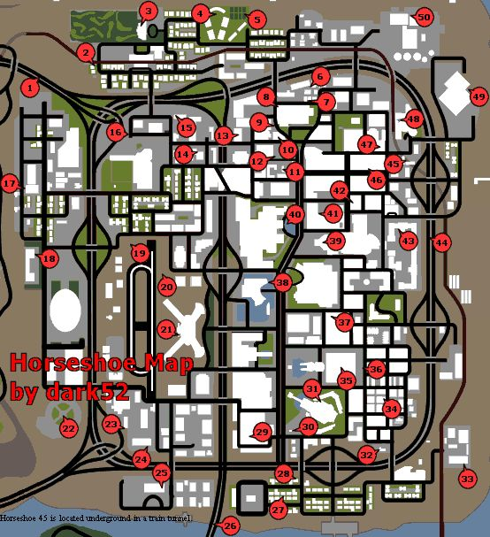
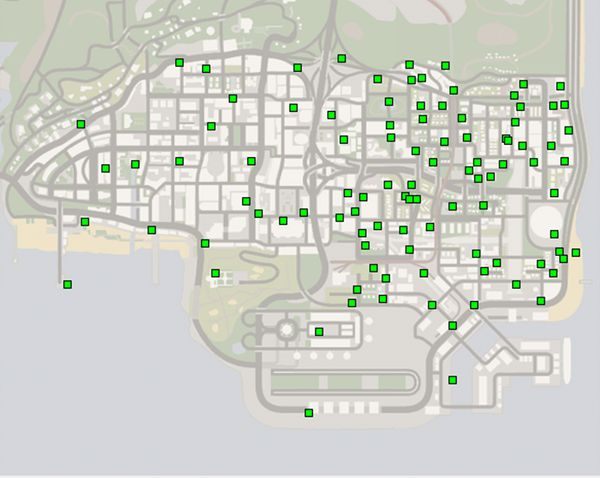

Misiones
Las misiones son importantes para el 100% y no solo las principales sino que tambien las secundarias
y de negocios, estas misiones se puden ir haciendo mientras avanzas en el modo historia del juego y las
secundarias se pueden hacer desviandose de la historia para hacer misiones a personajes secundarias

Propiedades
Es importante tener mucho dinero para comprar cada una de las propiedades que estan repartidas
por todas las ciudades, tambien es obligatorio avanzar en la historia para tener mas propiedades que comprar,
dependiendo de la propiedad puede ser muy barato o muy caro y cada propiedad se encuentra en lugares faciles de
encontrar a simple vista

La Autoescuela
En las autoescuelas solo es necesario pasarselo con medallas de bronce, las autoescuela son moto, carro y avion.
la mas facil es el de las motos despues de esa sigue el del avion, la cual es obligatoria para avanzar en la historia.
y por ultimo esta la de carro la cual es la mas dificil por sus ultimos retos que tiene

Carreras
En las carreras solo es necesario quedar de primero, cada carrera es diferente ya que hay de moto, atletismo,
de barcos, de autos, de bicicletas y de aviones. cada uno tendra sus propios requisitos y sus diferentes dificultades,
las carreras mas dificiles son las de auto debido a que siempre va a ver autos andando por ahi

Trabajos
Es necesario completar estos trabajos dependiendo del nivel que nos pidan, algunos de estos trabajos serian policia,
bomberos, medico, taxista, camionero y repartidor. algunos de estos trabajos te dan recompensas te dan algunos beneficios
por ejemplo, policia te da mayor resistencia en el chaleco antibala, bombero te da inmunidad al fuego y medico te aumenta
la vida

Fotografias
en san fiero tenemos que ir por diferentes lugares para tomar una fotografia de un lugar importante
para la ciudad, para algunas de estas fotografias es necesario avanzar en la historia hasta desbloquear el puente
que conecta con el desierto, debido a que en el puente se encuentran dos fotografias que son mas faciles de tomar
desde la mitad del puenta

Herraduras
derrota a osmund saddler, jefe del capitulo 14, este es el jefe final del juego, pose dos face en la cual la segunda
se vuelve una masa gigantesca, lo mas recomendable es que utilizes un lanzacohetes contra el jefe, pero ya que este jefe
tiene multiples fases primero te recomendamos dispararle en los ojos y despues de eso cuando ya este en su ultima face
ya podras usar el lanzacohetes

Grafitis
en los santos debemos encontrar los 100 grafitis, aunque parescan muchos son muy faciles de
encontrar, muchos de estos grafitis lo podemos encontrar a simple vista en paredes o en paredes
pero algunas estan realmente escondidas en callejones o en algunos edificios pequeños